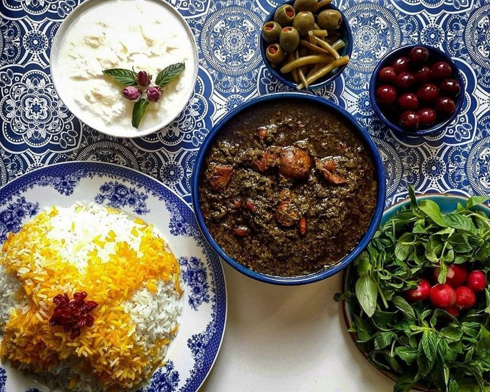

خورش قیمه

خورش قورمه سبزی از محبوب ترین خورش های ایرانی است که تاریخچه آن به ۲۰۰۰ تا ۵۰۰۰ سال پیش بر می گردد که شاید کمتر ایرانی پیدا شود که عاشق این خورش خوشمزه نباشد. خورش قورمه سبزی از اصیل ترین غذاهای ایرانی محسوب می شود که در بیشتر نقاط کشورمان با یک دستور خاص تهیه می شود. البته در برخی شهرها این خورش با مواد دیگری طبخ می شود که خیلی متفاوت نیستند مثلا به جای استفاده از لوبیا قرمز از لوبیا چیتی استفاده می شود و در برخی نقاط به جای استفاده از سبزی خورشتی متداول از سبزی های معطر کوهی و محلی استفاده می شود. با موادی که در این دستور آشپزی قرار گرفته است می توانید برای ۴ نفر خورشت قورمه سبزی تهیه کنید. در صورتی که می خواهید مقداری کمتر یا بیشتری خورش تهیه کنید کافیست مقدار مواد را ضرب یا تقسیم کنید.
مواد لازم:
- پیاز بزرگ ۱ عدد
- لیمو عمانی ۳ عدد
- لوبیا قرمز ۲۰۰ گرم
- سبزی خورشتی ۵۰۰ گرم
- روغن مایع به مقدار لازم
- گوشت خورشتی: ۴۰۰ گرم
- نمک، فلفل سیاه و زردچوبه: به مقدار لازم
طرز تهیه:
- آماده سازی لوبیا:
- برای اینکه پس از مصرف خورش قورمه سبزی دچار نفخ در معده نشوید و لوبیا راحت تر بپزد ، باید از شب قبل لوبیا قرمز را درون یک کاسه آب بخیسانید و در صورت امکان دو یا سه مرتبه آبش را تعویض کنید. این کار علاوه بر اینکه نفخ لوبیا قرمز را می گیرد باعث می شود لوبیا راحت تر و سریعتر نیز پخته شود.
- تفت دادن پیاز و گوشت
- برای شروع آشپزی ابتدا پیاز را پوست می گیریم و به صورت ریز خرد می کنیم. یک قابلمه مناسب روی حرارت قرار می دهیم و مقداری روغن داخلش می ریزیم.
- پس از اینکه روغن داغ شد پیاز خرد شده را به همراه کمی زردچوبه اضافه می کنیم و کمی تفت می دهیم تا پیاز نرم شود، پس از اینکه پیاز نرم شد گوشت خورشتی را پس از شستشو به صورت قطعات یکدست خرد می کنیم و به پیاز اضافه می کنیم
- تفت دادن مخلوط گوشت و پیاز را ادامه می دهیم تا رنگ تمام قسمت های گوشت تغییر کند و تقریبا سرخ شود.
-
جوشاندن لوبیا قرمز
- یک قابلمه کوچک روی حرارت قرار دهید و مقداری آب داخلش بریزید ، حرارت را زیاد کنید تا آب سریع به جوش بیاید سپس لوبیا قرمز را به مدت ۱۵ دقیقه درون آب جوش قرار دهید تا رنگ آن گرفته شود. اگر این کار را نکنید ممکن است رنگ اولیه قرمز باعث کدر شدن رنگ خورش شود.
- افزودن لوبیا
- پس از اینکار لوبیا قرمز را آبکشی کنید و به مخلوط گوشت و پیاز اضافه کنید. لوبیا قرمز را هم کمی با مخلوط گوشت و پیاز تفت می دهیم سپس چند لیوان آب جوش به قابلمه اضافه می کنیم و اجازه می دهیم گوشت و لوبیا با حرارت بسیار ملایم بپزند.
-
افزودن سبزی
- در مرحله بعد سبزی خورشتی را پس از تمیز کردن و شستشو به صورت ریز خرد می کنیم. سبزی را به صورت جداگانه با مقداری روغن در یک تابه مناسب می ریزیم و تفت می دهیم تا سبزی سرخ شود. هر چقدر رنگ سبزی پر رنگ تر شود در پایان کار خورش سیاه تر خواهد شد. البته ابن کار شاید باعث زیباتر شدن خورش شود ولی باعث می شود تمام ویتامین ها و مواد معدنی درون سبزیجات از بین برود.
- پس از اینکه سبزی را خوب تفت دادیم به قابلمه خورش اضافه می کنیم. در این مرحله مقداری فلفل سیاه و نمک به خورش اضافه می کنیم.
- پخت خورش قورمه سبزی
- اگر در مراحل اولیه پخت خورش نمک اضافه کنیم باعث می شود گوشت دیرتر بپزد. لیمو عمانی را باید از قبل با چنگال سوراخ کنیم و درون یک لیوان آب قرار دهیم تا تلخی اش گرفته شود و خورش را تلخ نکند یا می توانید لیمو عمانی را از وسط به دو نیم کنید و تخم های لیمو را در بیاورید و داخل یک لیوان با آب ولرم بگذارید و روی آن یک قاشق قرار دهید تا کاملا خیس بخورد. پس از اینکه سبزی خورش چند جوش خورد لیمو عمانی را اضافه می کنیم. حالا باید اجازه دهیم تا خورش جا بیفتد و آماده سرو شود. هر چقدر خورش بیشتر روی حرارت ملایم بماند بهتر جا می افتد. اگر خورش را قبل از اینکه جا بیفتد سرو کنیم آب خورش از دیگر مواد خورش جدا می شود و ظاهر زیبایی نخواهد داشت.